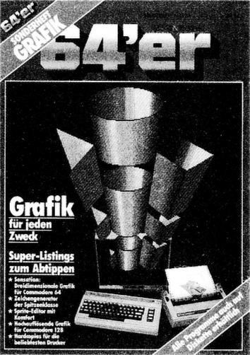

Die Grenzen sprengen

| n Sachen Grafik ist schon alles dagewesen. Behaupten einige. Wir wollen Ihnen beweisen, daß das nicht stimmt. Dieses 64'er Sonderheft Grafik setzt mal wieder Maßstäbe. Mit Giga-CAD erhalten Sie ein Grafik-Programm, das es bisher noch nicht gegeben hat. Wenn Sie sich die Beispiel-Grafiken auf den ersten Seiten angesehen haben, dürfte Ihnen »das Wasser im Mund zusammenlaufen« Zu Recht. Solche Grafiken war man bisher vom C 64 nicht gewohnt. Selbst Computer, die ein Vielfaches mehr kosten, kennen ähnliche Programme nicht.
Giga-CAD ist wohl eines der leistungsfähigsten Programme für den C64, um computergestützt dreidimensionale Grafiken zu konstruieren. Räumliche Körper lassen sich auf nur denkbar einfache Art mit Hilfe eines Joysticks eingeben. Sie werden bequem mit Hilfe von Symbolen und Menüs durch das Programm geführt. Das erleichtert den Umgang mit Giga-CAD erheblich. Grafiken können Sie bis zu einer Auflösung von 1000 mal 640 Punkten berechnen und ausdrucken lassen. Aber damit noch nicht genug: Selbst Filme mit 24 Bildern pro Sekunde sind für Giga-CAD kein Problem. Das heißt sie sind garantiert flimmerfrei. Lassen Sie sich begeistern, und begeistern Sie auch andere mit einer Vorführung.
Erschrecken Sie nicht vor den ellenlangen Listings. Selbstverständlich sind alle Programme auf Disketten erhältlich. Weil wir überzeugt sind, daß das Giga-CAD-System wie eine Granate einschlägt, bieten wir noch einen besonderen Service an: Zusätzlich zu den zwei Disketten mit allen
Programmen dieser Ausgabe können Sie eine weitere dritte Diskette vollgepackt mit Demos zu Giga-CAD beziehen. Apropos vollgepackt: alle Disketten sind beidseitig bespielt und zwar randvoll. Das bedeutet fast ein Megabyte Programme und Demos zu dieser Ausgabe! Auch wenn Giga-CAD alleine schon ein Sonderheft wert wäre, die weiteren Programme in dieser Ausgabe haben es ebenfalls in sich. Der engagierte Grafik-Programmierer findet alles, was sein Herz begehrt. Das reicht von Basic-Erweiterungen zum einfachen und vor allem schnellen Zeichnen und Erstellen von Grafiken, über Busineß-Grafiken bis hin zu Hardcopy-Routinen für verschiedene Drucker. Sprite-Programmierung wird genauso unterstützt wie Grafik auf demC 128. Wer den Plotter 1520 besitzt, wird begeistert sein von Plot-Basic. Mit ihm lassen sich auch komplizierte Zeichnungen mit minimalem Aufwand erstellen. Geschwindigkeitsfanatiker sollten sich vor allem einmal die »schnellste Grafikerweiterung für den C 64« ansehen. Sie erlaubt das Ziehen einer Linie mit einer Geschwindigkeit von fast 12000 (zwölftausend!) Punkten pro Sekunde. Wenn das nichts ist. :
Ich glaube, daß Sie mit diesem 64er Grafik-Sonderheft wieder einmal ein Heft der Superlative bekommen, mit Programmen, die es bisher noch nicht gegeben hat. Sie zeigen auch, daß der C64 noch immer nicht ausgereizt ist. Es macht einfach Spaß, zu sehen, wie bisherige Grenzen immer wieder gesprengt werden.
Georg Klinge